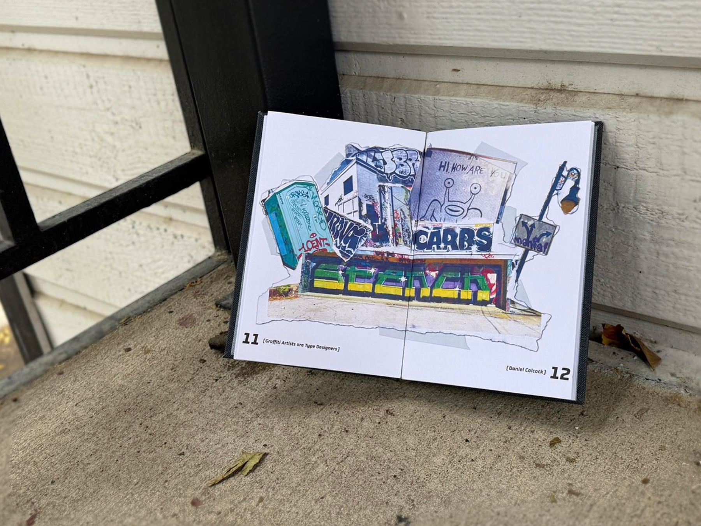
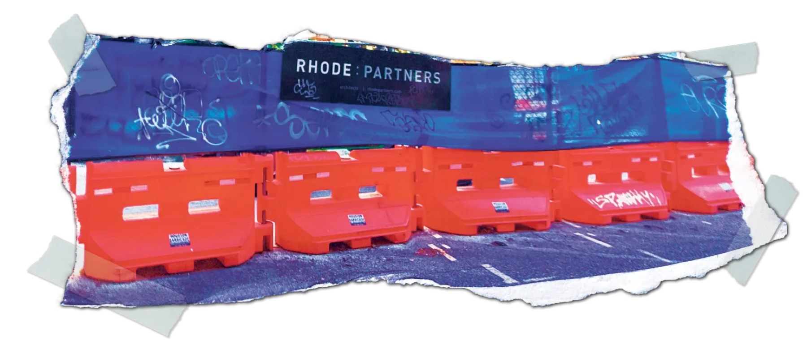
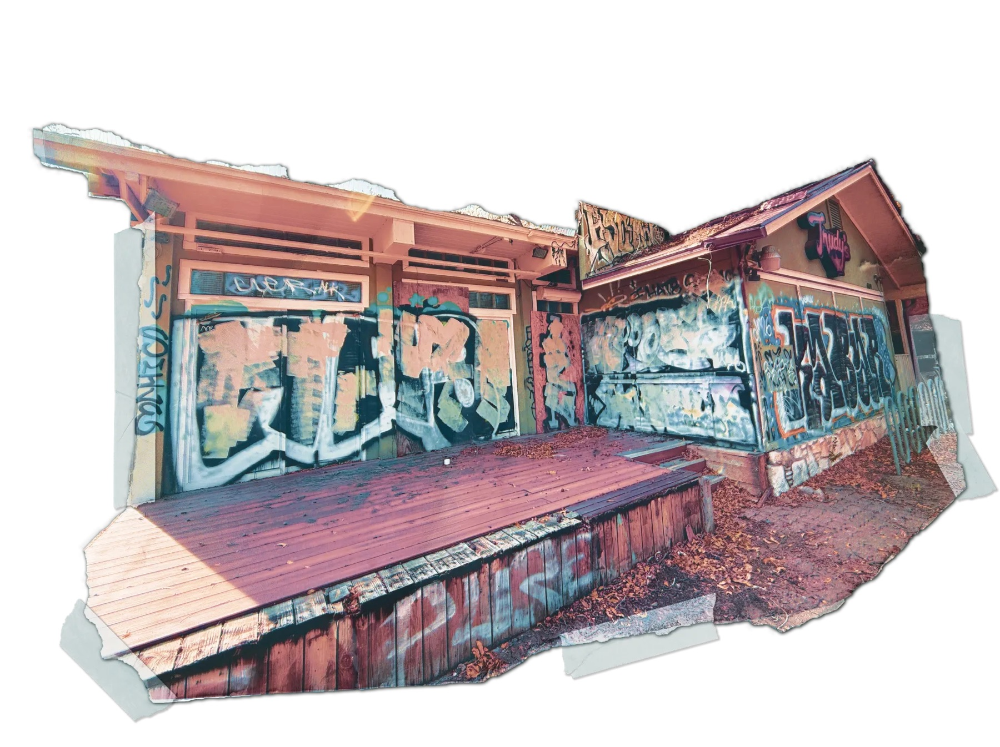
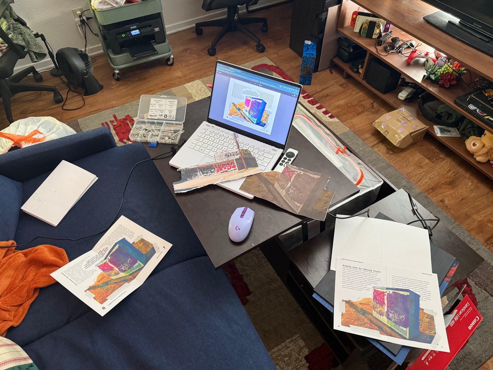
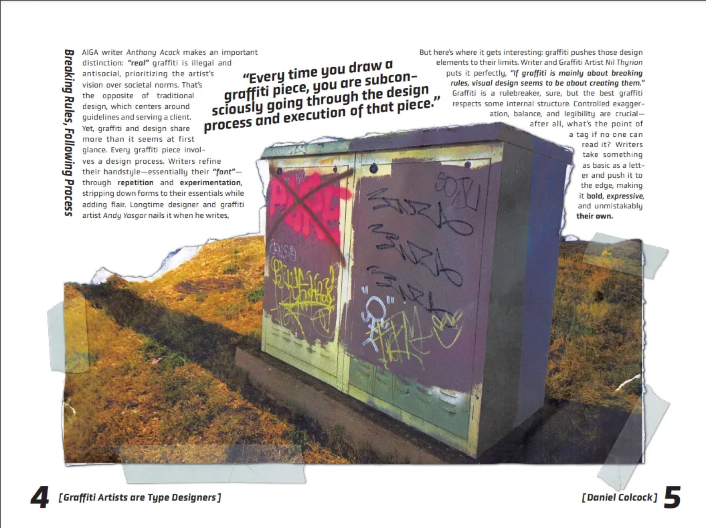
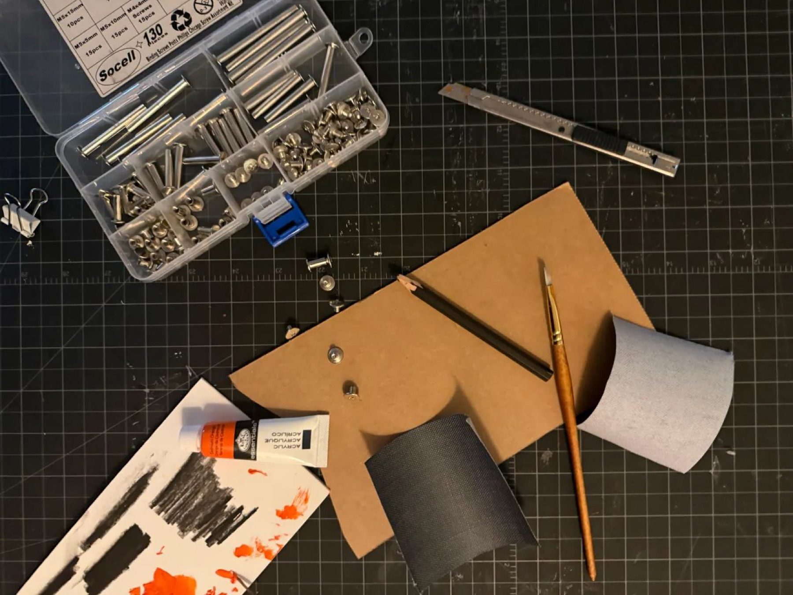
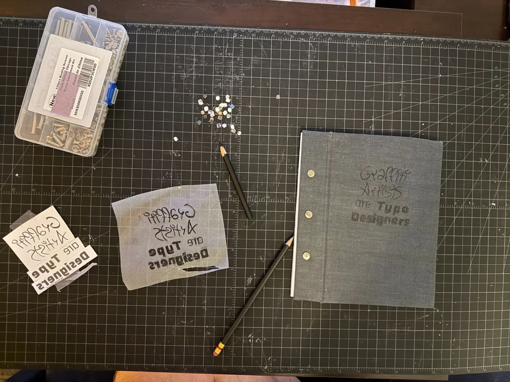
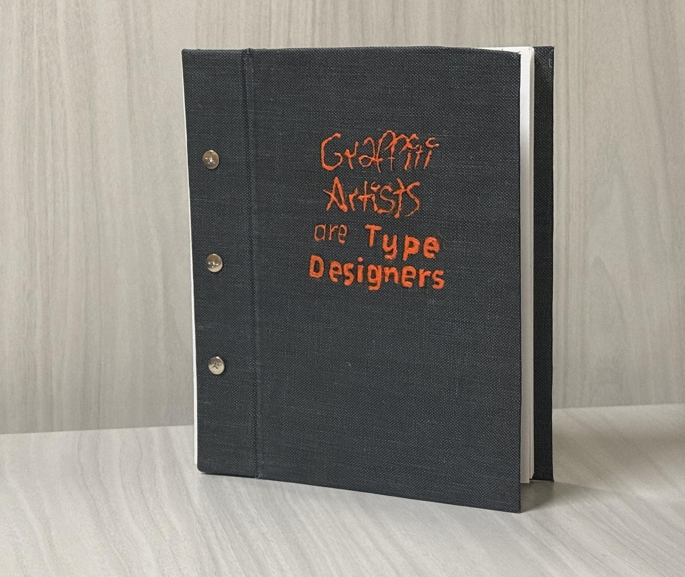
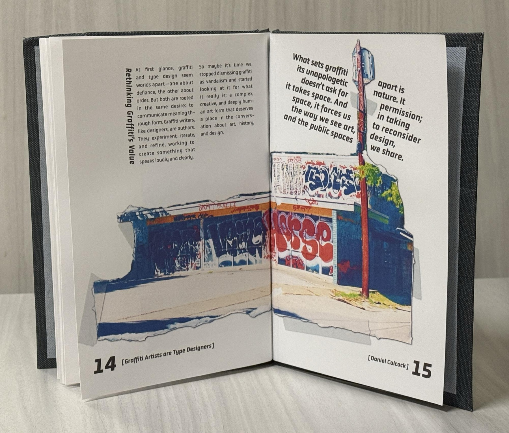
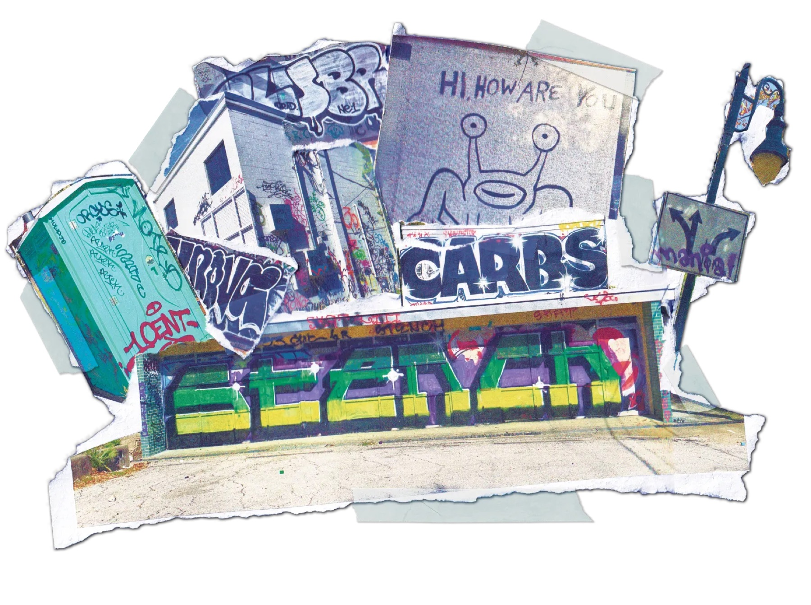

graffiti
artists are
type
designers
A hand-bound editorial book arguing that graffiti artists and type designers share the same iterative process of critique, form development and letter-form mastery. I developed a torn-image layout language, acrylic-painted covers and screw-post binding to bridge street energy with typographic craft.

& book binding
2024
UT Austin
· Illustrator
graffiti artists
are type designers.
For Typography 1, I was asked to make a book on any topic related to type. I chose the intersection of graffiti and typography, a connection I'd grown curious about since moving to Austin. The central argument: both develop letter-forms through iteration, critique, and a deep attention to form.

a culture of critique.
I first researched graffiti's historical and cultural roots: how it emerged as a voice for marginalised communities, evolved its own style taxonomy of tags, throw-ups and wild style, and developed a culture of mentorship and critique that mirrors a formal type education. Then I went into the city, looking for eye-catching tags and complex throw-ups to dissect.

too clean for a book
about graffiti.
My first layouts belonged in a textbook. The fix came from torn flyers layered over one another on a street lamp. That chaotic, layered energy was exactly what graffiti is at its core. So I printed, ripped, scrapped and sanded the photos for real texture, scanned them back in, and set the type around them.


a cover that matches
the content.
I designed the cover digitally, transferred it to grey fabric with charcoal, then painted it in acrylic to echo the texture of puff paint on concrete. Cover and pages are held with screw-post binding, an industrial, riveted look that suits the subject.


chaos, held by
a grid.
The final book balances the chaotic energy of graffiti with the structure of a designed grid, breaking the grid where it earns extra energy. Torn photographic examples sit alongside clean typographic hierarchies, and the pacing moves from historical context to artist profiles to formal analysis, showing the two worlds have more in common than you'd first assume.


This project taught me how material and form can carry an argument as strongly as words. The torn-image technique, the painted cover, the binding method: each was a decision that reinforced the central thesis. It pays dividends to step away from the screen, look at the work for what it is, and ask what it wants to become.
If I reworked it: I'd spend longer on the cover to pull more of that chaotic energy out of the book, and produce fold-outs that diagram, at a larger scale, the typographic similarities between graffiti and type design.
